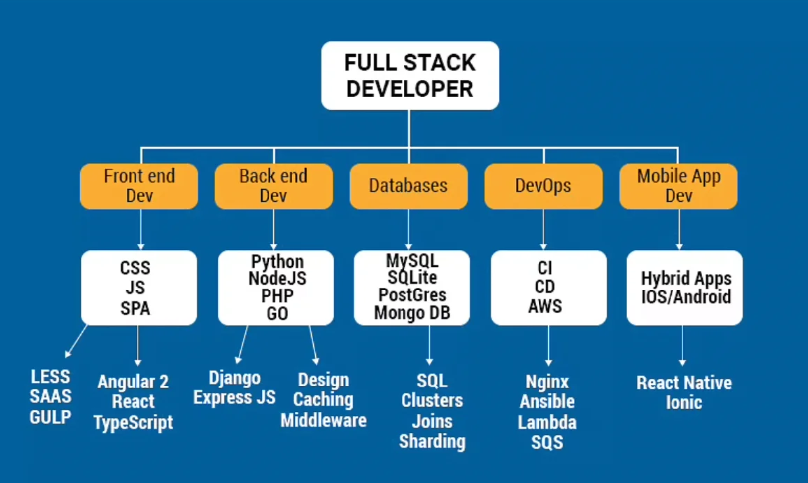
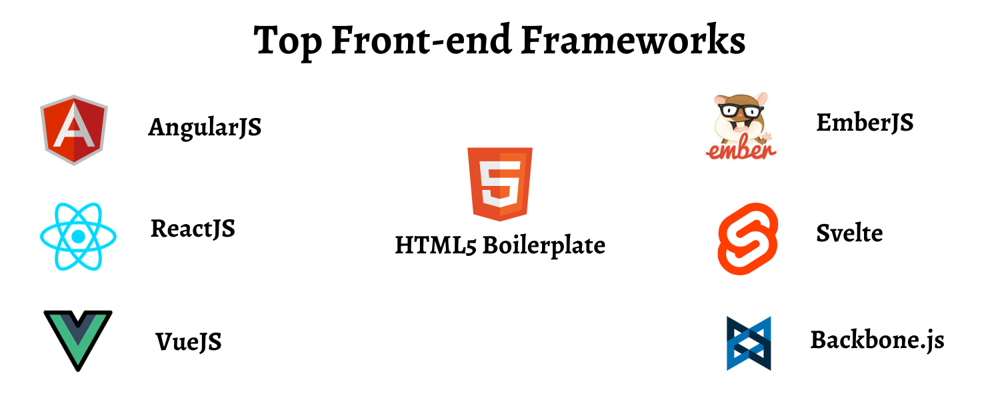
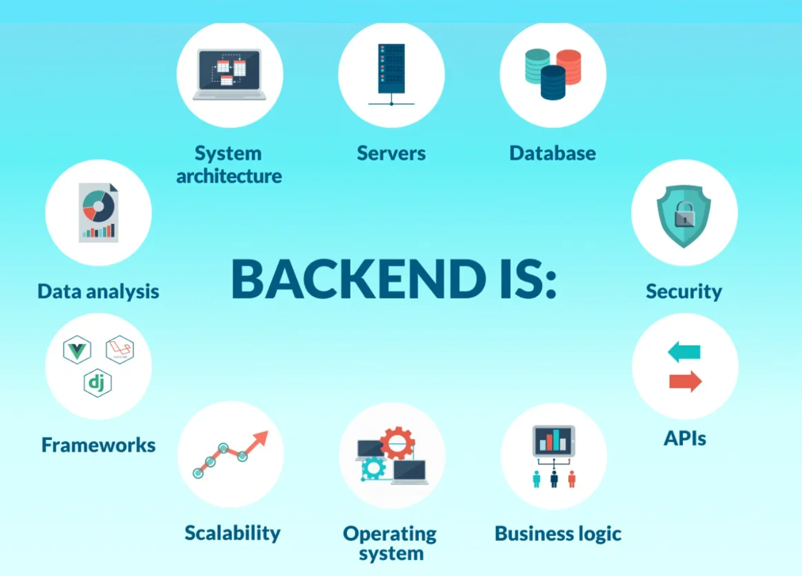

What is Full Stack Development?

Image source: website filesFull Stack Development is the practice of designing and building both the client-facing interface of a web application and the server-side systems that power it. A developer working across both layers is referred to as a full stack developer.
The term "stack"
The word stack describes the ordered collection of technologies that together form a complete, functioning system. Each layer depends on the one beneath it: the presentation layer communicates with the logic layer, which in turn reads and writes to the data layer. This layered architecture underpins virtually every web application in production today.
The practical significance of full stack competency is that a single developer can reason about and modify any part of a system independently — from a button in the browser to a database schema on the server. This reduces communication overhead between teams and shortens the time taken to ship features.
| Responsibility | Examples |
|---|---|
| Design and build the user interface | HTML structure, CSS layout, JavaScript interactions |
| Implement server-side application logic | REST APIs, authentication, business rules |
| Manage and query data storage | SQL queries, database schema design |
| Deploy and maintain the application | Version control, hosting, CI/CD pipelines |
Frontend Development

Image source: css hopperThe frontend is the portion of a web application that runs in the user's browser. It is responsible for everything the user sees and interacts with directly — layout, typography, colour, animations, and responses to user actions such as clicks and form submissions.
The three core technologies of the frontend form a clear division of responsibility:
| Technology | Responsibility | Example task |
|---|---|---|
| HTML | Document structure and semantic meaning | Marking up a form with labels, inputs, and a submit button |
| CSS | Visual presentation and layout | Applying colour, spacing, and Flexbox grid to the form |
| JavaScript | Dynamic behaviour and user interaction | Validating field inputs before submission without a page reload |
Large-scale applications typically use a JavaScript framework to organise the frontend into reusable, maintainable components.
| Framework | Origin | Characteristic approach |
|---|---|---|
| React | Meta (2013) | A component library centred on a virtual DOM. UI is expressed as a tree of isolated, reusable components. State changes trigger efficient, targeted re-renders rather than full page refreshes. |
| Angular | Google (2016) | A full framework including routing, form handling, HTTP client, and dependency injection. Suited to large enterprise codebases where a consistent, opinionated structure is required. |
| Vue.js | Evan You (2014) | A progressive framework designed to be incrementally adoptable. Its single-file component format co-locates template, script, and styles, which many developers find intuitive. |
<!-- HTML defines the elements -->
<button id="greetBtn" type="button">Show greeting</button>
<p id="output"></p>
/* CSS controls visual appearance */
#greetBtn {
background: #406093;
color: white;
padding: 0.5rem 1.2rem;
border: none;
border-radius: 4px;
cursor: pointer;
}
// JavaScript adds interactivity — no page reload
document.getElementById('greetBtn')
.addEventListener('click', function () {
document.getElementById('output').textContent
= 'Hello from the frontend layer.';
});Backend Development

Image source: alaoThe backend runs on a server and is not directly visible to the user. It receives requests from the frontend, applies business logic — such as authenticating a user, calculating a result, or constructing a database query — and returns a response. Separating this logic from the client prevents sensitive operations and data from being exposed in the browser.
| Technology | Language | Notable characteristics |
|---|---|---|
| Node.js with Express | JavaScript | Runs JavaScript on the server using Chrome's V8 engine. Non-blocking I/O makes it efficient for applications handling many concurrent connections. Express is a minimal routing framework built on top of Node.js. |
| Django | Python | Follows a "batteries included" philosophy — ships with an ORM, admin interface, authentication system, and form handling. Reduces boilerplate significantly for data-driven applications. |
| Laravel | PHP | Elegant syntax, built-in routing, and an expressive ORM called Eloquent. Widely used in traditional server-rendered applications and REST APIs alike. |
const express = require('express');
const app = express();
app.use(express.json()); // parse incoming JSON bodies
// GET /api/status — returns a simple health-check response
app.get('/api/status', (req, res) => {
res.json({ status: 'running', version: '1.0' });
});
// POST /api/apply — receives a job application from the frontend
app.post('/api/apply', (req, res) => {
const { name, email, position } = req.body; // destructure fields
// 1. Validate input 2. Save to database 3. Send confirmation
res.status(201).json({ success: true, applicant: name });
});
app.listen(3000);Database Layer
A database provides persistent storage — data is preserved across server restarts, user sessions, and application deployments. The backend is the only layer that communicates directly with the database; the frontend never queries it directly. This boundary is a security requirement, not merely a convention.
Databases are broadly categorised into two models: relational (SQL) and non-relational (NoSQL). The choice between them depends on the structure and access patterns of the data.
| Database | Model | Data format | Well suited for |
|---|---|---|---|
| MySQL | Relational | Tables with rows and columns | E-commerce, banking, HR — structured data with defined relationships |
| PostgreSQL | Relational | Tables; supports JSON columns | Complex queries, financial records, reporting systems |
| MongoDB | Document (NoSQL) | JSON-like documents | Content management, real-time feeds, variable-schema data |
| Redis | Key-value (NoSQL) | In-memory key-value pairs | Session storage, caching, rate-limiting — speed is critical |
-- Define the structure of the applications table
CREATE TABLE applications (
id INT AUTO_INCREMENT PRIMARY KEY,
full_name VARCHAR(100) NOT NULL,
email VARCHAR(150) NOT NULL UNIQUE,
position VARCHAR(80),
applied_at TIMESTAMP DEFAULT CURRENT_TIMESTAMP
);
-- Insert one record
INSERT INTO applications (full_name, email, position)
VALUES ('Aadarsh K.C.', 'aadarsh@example.com', 'Full Stack Developer');
-- Retrieve all records, most recent first
SELECT id, full_name, position, applied_at
FROM applications
ORDER BY applied_at DESC;Full Stack Architecture Diagram
The diagram below represents the three-tier architecture and the direction of communication between each layer when a user submits the job application form built across this portfolio.
Request lifecycle when the form is submitted
| Step | Layer | Action |
|---|---|---|
| 1 | Frontend | JavaScript intercepts the submit event and calls event.preventDefault(), preventing a
page reload. |
| 2 | Frontend | Validated field values are serialised into JSON and sent via fetch() as an HTTP POST
request. |
| 3 | Backend | The Express route handler receives the request, validates and sanitises the data, then constructs a database query. |
| 4 | Database | The record is inserted; the database returns the new row's ID to the backend. |
| 5 | Backend | A JSON response — { "success": true } — is sent back to the frontend with HTTP status
201. |
| 6 | Frontend | JavaScript reads the response and updates the DOM to display a success message, with no page navigation. |
Next: HTML
Document structure, core tags with output demonstrations, and the form skeleton.